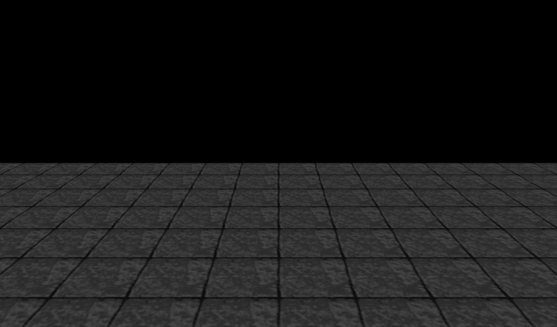
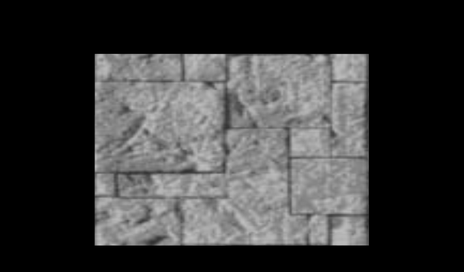
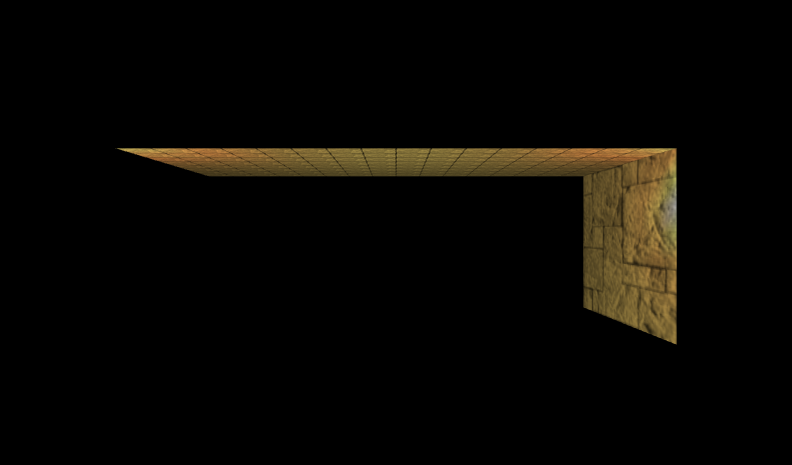
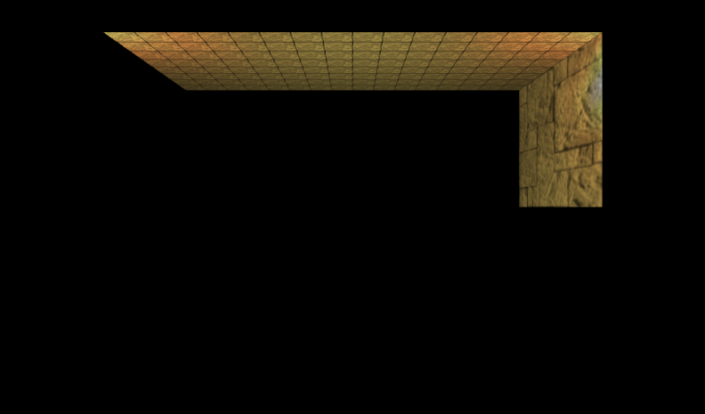
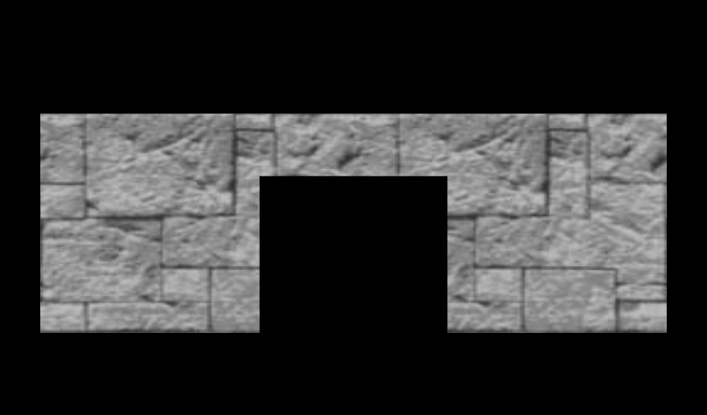
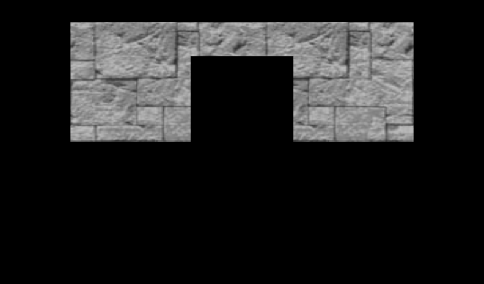
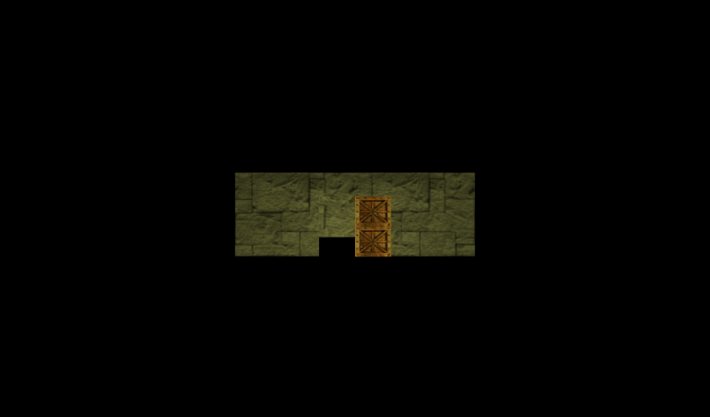
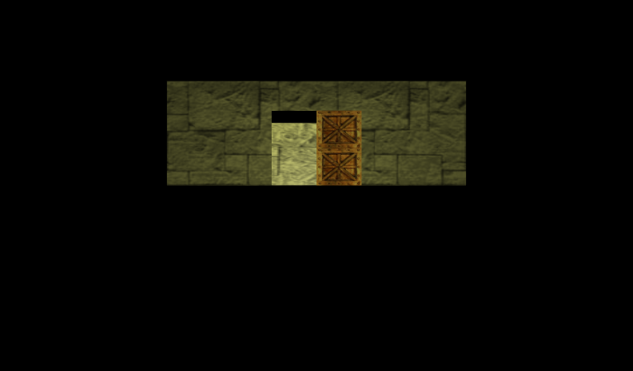

|
The further the viewer can see, the more there is to draw.
Note that if a shape is distant, the shape is smaller and the viewer can't see as much detail.
So... draw it with less detail.
Varying detail with distance reduces initial download time and increases drawing speed.
Increase performance by making multiple levels of shapes: high detail for close up viewing,
progressively lower detail for more distant viewing.
Group the levels in an LOD node, ordered from high detail to low detail, and using an array of range values to select switching distances .
These X3D scenes are adapted directly from the
original VRML 2.0 Sourcebook chapter examples.
Also available:
VRML 2.0 Sourcebook course notes.
|


![[1] Figure25.01TorchHighDetail.x3d - Torch (high detail)](_viewpoints/Figure25.01TorchHighDetail.x3d._VP_Torch_(high_detail).png){kind=link}
![[2] Figure25.01TorchHighDetail.x3d - (default X3D view from 0 0 10)](_viewpoints/Figure25.01TorchHighDetail.x3d._VP_Default_viewpoint.png){kind=link}
![[3] Figure25.02TorchMediumDetail.x3d - Torch (medium detail)](_viewpoints/Figure25.02TorchMediumDetail.x3d._VP_Torch_(medium_detail).png){kind=link}
![[4] Figure25.02TorchMediumDetail.x3d - (default X3D view from 0 0 10)](_viewpoints/Figure25.02TorchMediumDetail.x3d._VP_Default_viewpoint.png){kind=link}
![[5] Figure25.03TorchLowDetail.x3d - Torch (low detail)](_viewpoints/Figure25.03TorchLowDetail.x3d._VP_Torch_(low_detail).png){kind=link}
![[6] Figure25.03TorchLowDetail.x3d - (default X3D view from 0 0 10)](_viewpoints/Figure25.03TorchLowDetail.x3d._VP_Default_viewpoint.png){kind=link}
![[8] Figure25.04ThreeTorchesSideBySide.x3d - (default X3D view from 0 0 10)](_viewpoints/Figure25.04ThreeTorchesSideBySide.x3d._VP_Default_viewpoint.png){kind=link}
![[14] Figure25.06DungeonRoomFloor.x3d - Dungeon floor](_viewpoints/Figure25.06DungeonRoomFloor.x3d._VP_Dungeon_floor.png){kind=link}
![[16] Figure25.07DungeonRoomWall.x3d - Dungeon wall](_viewpoints/Figure25.07DungeonRoomWall.x3d._VP_Dungeon_wall.png){kind=link}
![[18] Figure25.08DungeonRoom.x3d - Dungeon room](_viewpoints/Figure25.08DungeonRoom.x3d._VP_Dungeon_room.png){kind=link}
![[19] Figure25.08DungeonRoom.x3d - (default X3D view from 0 0 10)](_viewpoints/Figure25.08DungeonRoom.x3d._VP_Default_viewpoint.png){kind=link}
![[22] Figure25.10DungeonWallWithDoorway.x3d - Dungeon door](_viewpoints/Figure25.10DungeonWallWithDoorway.x3d._VP_Dungeon_door.png){kind=link}
![[23] Figure25.10DungeonWallWithDoorway.x3d - (default X3D view from 0 0 10)](_viewpoints/Figure25.10DungeonWallWithDoorway.x3d._VP_Default_viewpoint.png){kind=link}
![[24] Figure25.11DungeonDoor.x3d - (default X3D view from 0 0 10)](_viewpoints/Figure25.11DungeonDoor.x3d._VP_Default_viewpoint.png){kind=link}
![[25] Figure25.12DungeonRoomsWithSlidingDoors.x3d - Click door for next dungeon room](_viewpoints/Figure25.12DungeonRoomsWithSlidingDoors.x3d._VP_Click_door_for_next_dungeon_room.png){kind=link}
![[26] Figure25.12DungeonRoomsWithSlidingDoors.x3d - (default X3D view)](_viewpoints/Figure25.12DungeonRoomsWithSlidingDoors.x3d._VP_Default_viewpoint.png){kind=link}